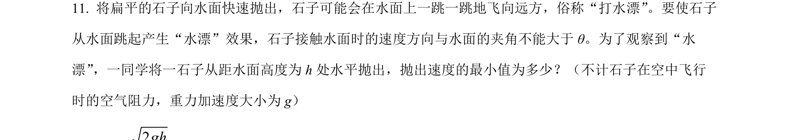
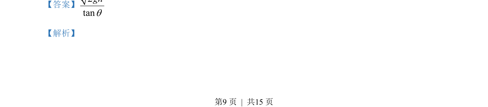
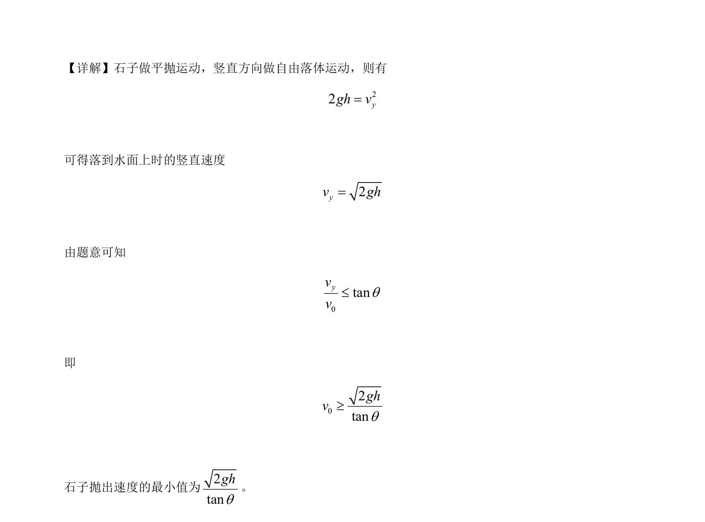

2023-新课标-11
吉林2023卷新课标不分题11题型选择难中
考点：平抛运动 速度的合成与分解 临界条件 最小值
题面

摘要
本题考查平抛运动中速度方向与斜面夹角限制下求最小抛出速度。
关联考点
答案与解析


📄 原 PDF 第 9 页：素材/真题/吉林/2008-2024·（吉林）物理高考真题/2023年高考物理试卷（新课标）（解析卷）.pdf
题干文本
- 将扁平的石子向水面快速抛出，石子可能会在水面上一跳一跳地飞向远方，俗称“打水漂”。要使石子
从水面跳起产生“水漂”效果，石子接触水面时的速度方向与水面的夹角不能大于 θ。为了观察到“水
漂”，一同学将一石子从距水面高度为h 处水平抛出，抛出速度的最小值为多少？（不计石子在空中飞行
时的空气阻力，重力加速度大小为 g）
解析文本
【答案】2tanghq
【解析】
的